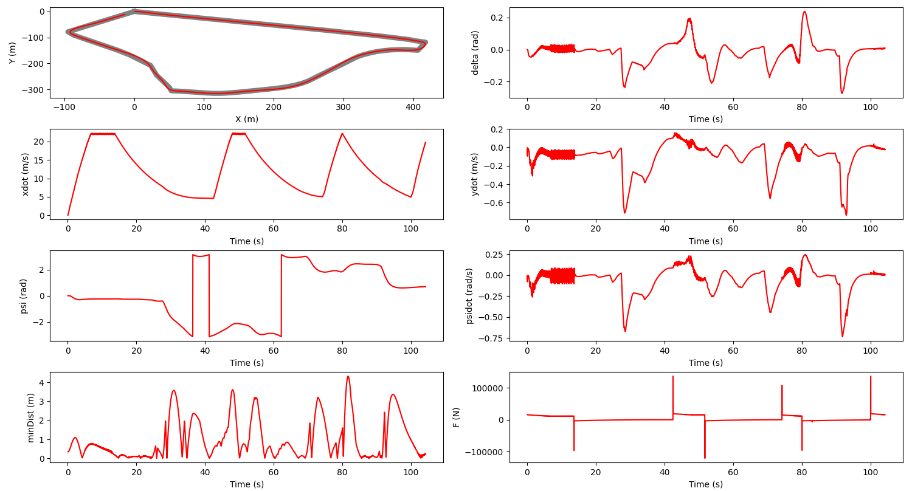

Construction Site Hazard Detection using Computer Vision
This project is made to create a Hazard Detection in a Construction Site based on the location of the worker in the site.
The location of the worker is obtained by a camera feed on the site. The video feed is sent through a YoloV7 object detection program to identify the
coordinates of the workers every frame. The network uses Transfer Learning on COCO dataset to improve the accuracy of the detection.
The coordinates are 2 Dimensional and they are then feed a global coordinate calculator program that uses transformation matrices to convert the 2D coordinates into 3D.
The new coordinates are cross referenced with the coordinates of the safe regions and the danger zones to identify the workers in the danger zone and raise a warning.
Path planning and control strategies for an autonomous buggy
I created a simulation of an autonomous buggy going around the track (CMU's Buggy Track) in the most opimal path possible, with the use of a lateral and longitudinal controller.
The simulation was done on Webots with the help of a tractor to indicate the buggy that is moving.
The controller was designed based on the bicycle model for the study of vehicle dynamics.
The longitudinal controller is based GPS coordinates of the track and the
acceleration is calculated based on the closest node.
The lateral controller on the other hand went through 5 different iterations:
- PID Controller
- State Feedback Controller
- LQR Controller
- MPC Controller
- EKF SLAM
With the use of these controllers the simulation was able to complete the track in less than 120 seconds and with less than 3 meters of deviation for the optimal path
of the track.
